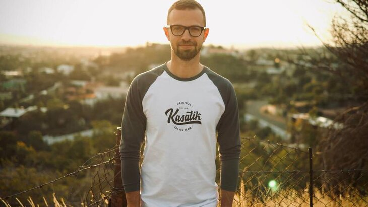

Про мене

Я народився 22 травня 1986 року у місті Луганськ. Від дитинства я виявляв цікавість до
медіа та масової комунікації. Свою професійну діяльність в медіа я розпочав ще під час навчання, де
вивчав соціологію.
Після закінчення навчання я вступив до команди телеканалу Інер, де почав свою професійну кар'єру як журналіст та репортер. Мій гострий розум, вміння аналізувати події та простежувати теми, що цікавлять глядачів, допомогли мені швидко зробити себе відомим у журналістському світі.
Я також відзначаюся своєю активністю в громадському житті. Я беру участь у численних благодійних акціях, підтримую проекти, спрямовані на соціальну підтримку потребуючих, та активно виступаю за важливі суспільні питання.
Поза своєю роботою в медіа, Я також активно подорожую та ділються своїми подорожніми враженнями та порадами на тему подорожей. Я веду свій власний блог та подкаст, де розповідаю про цікаві місця, культури та історії, з якими я зустрічаюся під час своїх подорожей.
Після закінчення навчання я вступив до команди телеканалу Інер, де почав свою професійну кар'єру як журналіст та репортер. Мій гострий розум, вміння аналізувати події та простежувати теми, що цікавлять глядачів, допомогли мені швидко зробити себе відомим у журналістському світі.
Я також відзначаюся своєю активністю в громадському житті. Я беру участь у численних благодійних акціях, підтримую проекти, спрямовані на соціальну підтримку потребуючих, та активно виступаю за важливі суспільні питання.
Поза своєю роботою в медіа, Я також активно подорожую та ділються своїми подорожніми враженнями та порадами на тему подорожей. Я веду свій власний блог та подкаст, де розповідаю про цікаві місця, культури та історії, з якими я зустрічаюся під час своїх подорожей.
Проекти
- Телепрограми про подорожі: Я був ведучим численних телевізійних шоу, присвячених подорожам. У цих програмах я відвідував різні країни та міста, ділився своїми враженнями, розповідав цікаві історії та рекомендації щодо подорожей.
- Блоги та подкасти: Я веду свій блог та подкаст, де розповідаю про подорожі. Я ділюся історіями своїх подорожей, розповідаю про культури та традиції різних країн, та надаю поради щодо планування подорожей, вибору місць для відвідування та безпеки під час подорожей.
- Співпраця з туристичними компаніями: Я співпрацюю з туристичними агентствами та компаніями, які спеціалізуються на подорожах. Я беру участь у рекламних кампаніях, промо-відео та подорожах на запрошення компаній, щоб промовляти про їхні туристичні послуги та приваблювати нових клієнтів.
- Лекції та майстер-класи: Я проводжу лекції та майстер-класи на тему подорожей, де ділюся своїм досвідом та знаннями. Я використовую ці заходи для навчання людей процесу планування подорожей, культурного обміну та роботи в медіа на тему подорожей.
- Співпраця зі спонсорами: Я отримую підтримку від спонсорів, які сприяють моїм подорожам. Вони надають матеріальну підтримку та обладнання для зйомок та роботи на віддалених місцях, що допомагає створювати цікавий та якісний контент.
Країни, які рекомендує відвідати:
- Індонезія: Я відвідав Балі та Яву, розповідаючи про їхні пляжі, культурний спадок та страви.
- Іспанія: В Іспанії, я досліджував Барселону з її архітектурними шедеврами та каталонською кухнею.
- Італія: Я відвідав Рим, Венецію і Флоренцію, де розповідав про мистецькі шедеври та італійську кухню.
- Ісландія: У цій країні льодовиків, я досліджував природні пейзажі, гарячі джерела та северне сяйво.
- Марокко: Я відправився до Марракешу, відвідав суки, палаці та пустелю Сахара.
- Швеція: В Стокгольмі, я поглибився в атмосферу північного міста та його культури.
- Португалія: В Лісабоні, я розповідав про вуличні культури та португальську кухню.
- Туреччина: У Стамбулі, я досліджував історичні пам'ятки та розповідав про спадок міста.
- Польща: В Кракові, я ділився враженнями від історичних вуличок та гастрономічних радощів.